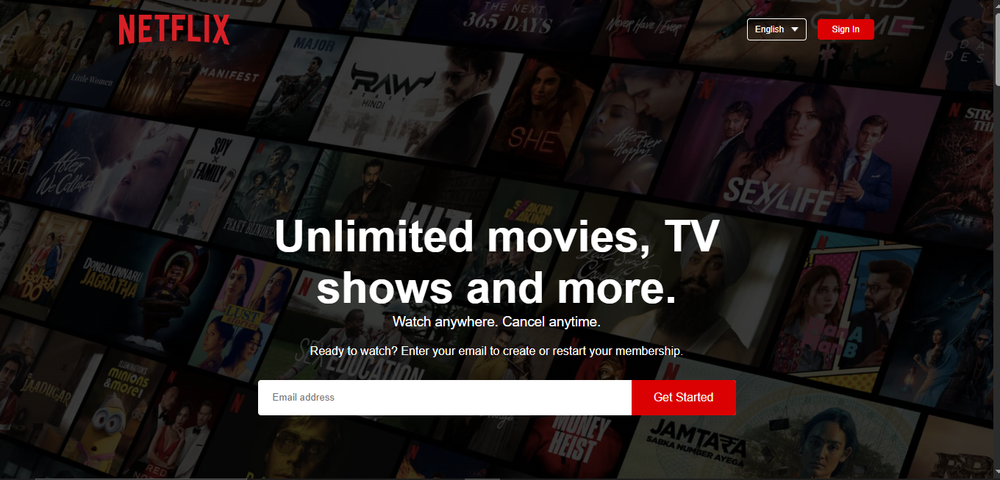
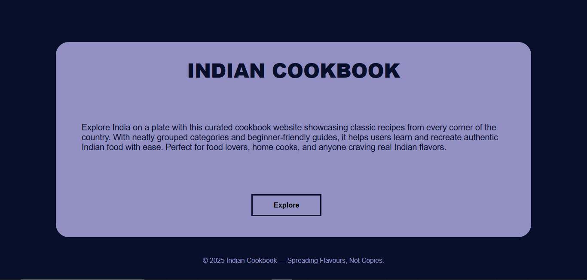
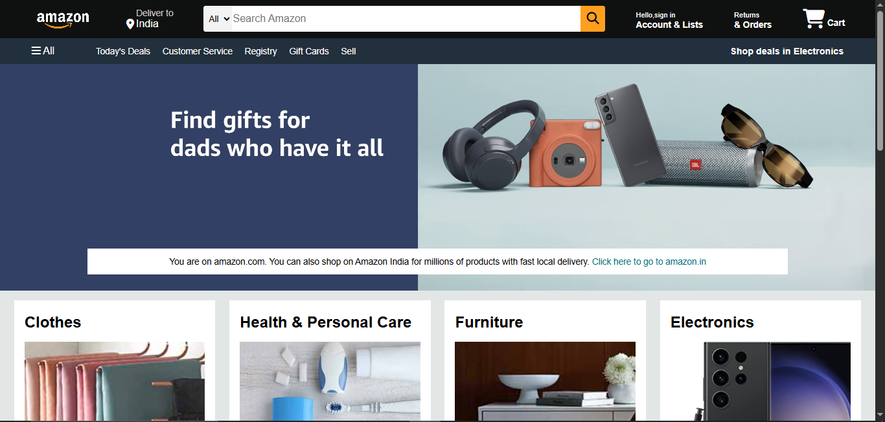

Developed a responsive weather web application that fetches and
displays real-time weather data using a weather API, showing weather
conditions by city and view temperature, humidity, wind speed, and
more.
Tech Stack: HTML, CSS, JavaScript, React.js
Projects

Netflix Clone
Designed and implemented an interactive front-end prototype of a
Netflix-like interface, featuring clean navigation, hero banners,
and content sections that enhance visual engagement.
Tech Stack : HTML, CSS
Tech Stack : HTML, CSS

Indian Cookbook
Built and deployed an interactive Indian Cookbook web application
that showcases a curated collection of Indian recipes with
ingredients, and cooking instructions.
Tech Stack: HTML, CSS
Tech Stack: HTML, CSS

Amazon Clone
Designed and developed a responsive Amazon-inspired e-commerce
front-end replicating key UI features such as product listings,
navigation bar, search interface, and product cards.
Tech Stack: HTML, CSS
Tech Stack: HTML, CSS
Projects